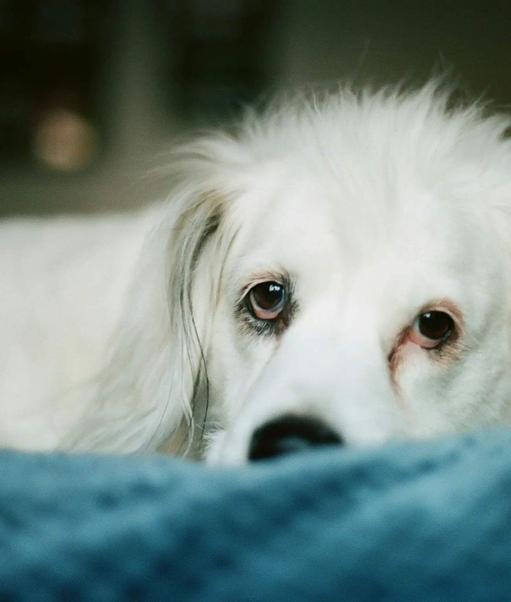

<!-- Pegar y escribir el alt de cada foto. La de la portada: quitar loading="lazy" y poner fetchpriority="high". -->
<picture>
  <source type="image/avif" srcset="azkena-m-600.avif 600w, azkena-m-900.avif 900w, azkena-m-1300.avif 1300w" sizes="100vw">
  
</picture>
